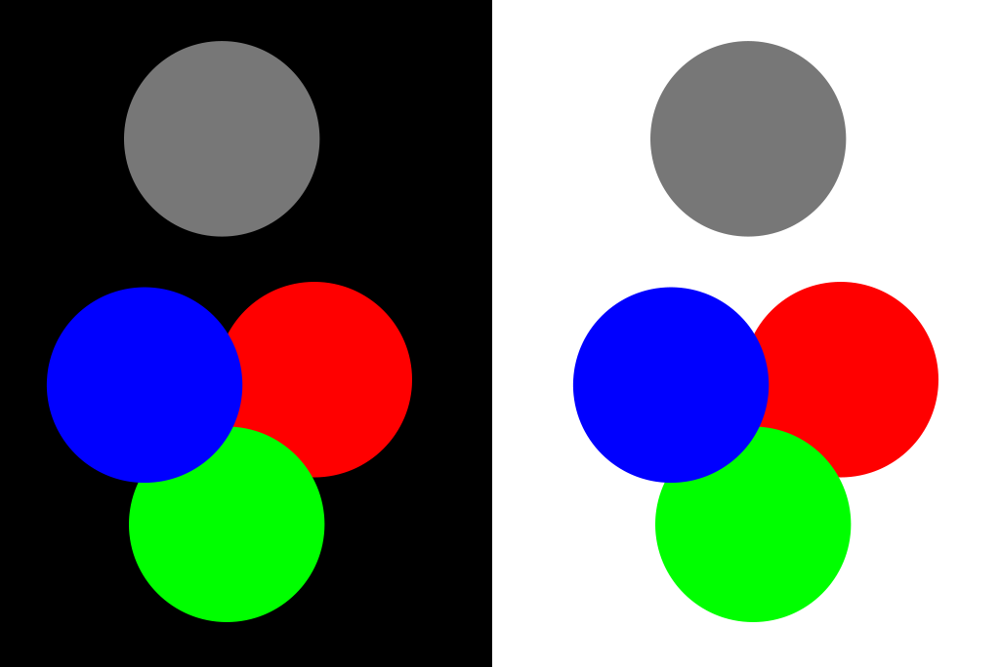

RGB Offset effect tester
This file is available in a GitHub repository
Tested with Firefox, Google Chrome and iOS Safari.
Original

CSS Background blending 01
background-blend-mode: darken;
mix-blend-mode: screen;
This has accurate colors with iOS Safari and Firefox.
Google Chrome has a noticable bug, the gray balls appears as brownish and white background becomes lightly blue.
CSS Background blending 02
background-blend-mode: darken;
mix-blend-mode: lighten;
This has accurate colors with iOS Safari, Firefox.
Google Chrome has a slight bug, the white background appears with a hint of blue.
Canvas reference
This works with all browsers, and is a good reference.